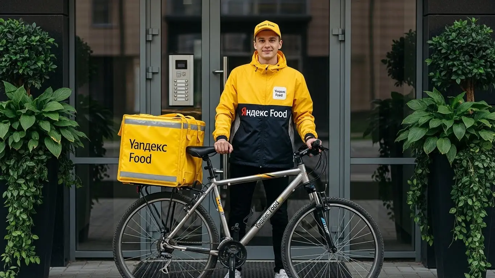
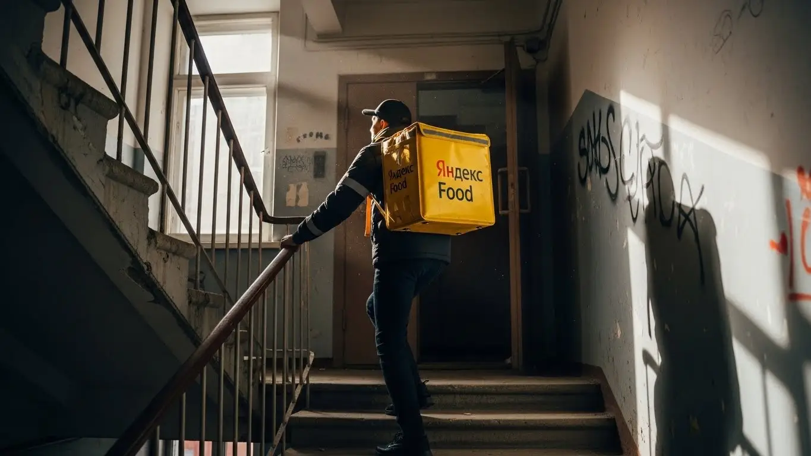

Работа курьером Яндекс Еды в Пскове 2025-2026: доход, график, условия
- Работа курьером Яндекс Еды в Пскове: для кого эта вакансия и что вы получите
- Сколько вы будете зарабатывать курьером в Пскове: калькулятор дохода и разбор выплат
- Реальный заработок курьера в Пскове: смены и месячный доход
- График работы и форматы занятости
- Требования к кандидату и документы
- Самозанятость, налоги и юридическая чистота
- Пошаговое оформление и первый выход на линию в Пскове
- Пешком, на вело или на авто: что выгоднее в Пскове
- Районы, маршруты и «топовые» зоны заказов в Пскове
- Безопасность, страховка, штрафы и оплата простоя
- Плюсы и возможные минусы работы курьером в Пскове
- Реальные истории и отзывы курьеров из Пскове
- Краткая выжимка: ответы на главные вопросы о работе курьером в Пскове
- Итоги и ваш следующий шаг
Все города
Слушай, если ты сейчас гуглишь «работа курьером Яндекс Еды в Пскове» и думаешь, что это легкие деньги, то давай сразу расставим точки над «i». Многие приходят в доставку с розовыми очками: мол, свободный график, никаких начальников, да и Псков-то небольшой, пробок нет. А потом сталкиваются с реальностью: то машина «умирает» на наших брусчатых улицах, то заказов нет, то штрафы прилетают ни за что. Я сам через это прошел и знаю, каково это — пытаться заработать в Пскове, когда не знаешь всех подводных камней.
Поверь мне, без понимания «внутрянки» курьерской работы в Пскове ты рискуешь разочароваться уже в первый месяц. Одно дело — общие рекламные обещания, другое — реальные расходы на бензин, амортизацию твоего авто или велосипеда, налоги для самозанятых. А еще есть система рейтинга, приоритеты, которые влияют на количество заказов, и, конечно, логистика. Знаешь, сколько новичков теряют деньги, потому что не понимают, как выгодно работать в час пик на Октябрьском проспекте или почему в Завеличье заказов больше, чем в Крестах? Они просто не знают местной специфики и совершают одни и те же ошибки. Если ты живешь в Пскове и хочешь узнать больше о вакансиях, то подробнее про работа курьером Яндекс Еда в Пскове можно почитать здесь, там же есть калькулятор дохода и форма заявки.
Именно поэтому я решил собрать весь свой опыт и знания в одном месте. Здесь мы с тобой разберём, какой формат работы курьером Яндекс Еды в Пскове подходит именно тебе: пеший, вело или на авто. Выясним, сколько реально можно заработать в Пскове, посчитаем чистый доход с учетом всех расходов. Покажу на примерах, какие «рыбные» места есть в городе, как погода влияет на спрос и где лучше не соваться в снегопад. Расскажу, как избежать штрафов, сравним Яндекс Еду с другими сервисами в Пскове и, конечно, поделюсь отзывами местных ребят, которые каждый день на линии.
Я, Алексей, уже не первый год кручу баранку и топчу псковские улицы, а еще держу небольшой таксопарк. Так что про работу «на колесах» и доставку знаю не понаслышке. Считай, что это твой личный гид по работе курьером Яндекс Еды в Пскове. Никакой воды, только проверенная информация и реальные советы. Давай по порядку, сейчас всё разложу по полочкам, чтобы ты вышел на линию подготовленным и начал зарабатывать, а не терять время.
Чтобы ты не потерялся в этой горе информации и сразу понял, о чём пойдёт речь, давай быстро пробежимся по основным моментам, которые мы разберём дальше.
Экспресс-навигация: что ты точно узнаешь о работе курьером в Пскове
В этой статье ты ТОЧНО узнаешь:
- Сколько реально можно заработать курьером в Пскове за смену и за месяц, и от чего это зависит?
- Как выбрать самый выгодный формат работы (пеший, вело или авто) именно для Пскова и его районов?
- Где в Пскове больше всего заказов и как не прогадать с выбором района для смены?
- Какие ошибки новичков приводят к штрафам или потере рейтинга, и как их избежать?
- Что такое оплата простоя и как Яндекс Еда страхует курьеров от рисков на линии?
- Как быстро оформить самозанятость и начать получать ежедневные выплаты без лишней бюрократии?
А если тебе некогда читать всю статью — переходи сразу к заключению, где ты найдёшь короткие ответы на все эти вопросы и указания, в каких разделах искать подробности.
А вот тебе наглядная инфографика, чтобы сразу оценить ключевые цифры и понять, на что можно рассчитывать в Пскове.
Ключевые показатели работы курьером Яндекс Еды в Пскове
Работа курьером Яндекс Еды в Пскове: для кого эта вакансия и что вы получите
Работа курьером в Яндекс Еде в Пскове — это реальная возможность для многих найти стабильный заработок или подработку. Здесь не важен твой прошлый опыт или образование, ведь начать можно без опыта. Главное — желание работать и ответственный подход. Сервис предлагает гибкие условия и свободный график, что особенно ценно в нашем городе, где многие ищут возможность совмещать работу с учебой.
Я сам когда-то начинал с курьерской работы, и могу сказать, что это отличный старт. Ты получаешь ежедневные выплаты, учишься ориентироваться в городе и общаться с людьми. В Пскове, с его компактностью и развитой сетью кафе, ресторанов и магазинов, работа курьером в сервисе Яндекс Еда становится особенно удобной и прибыльной.
Вот, например, мой знакомый, студент ПсковГУ, по имени Кирилл. Он живет в Завеличье и работает пешим курьером по 3-4 часа вечером после пар. За неделю у него стабильно выходит около 8-10 тысяч рублей, что для студента — очень хорошие деньги. Ему нравится, что можно самому выбирать, когда выходить на линию, и не зависеть от строгого расписания, ведь это настоящий свободный график.
В целом, вакансия курьера в Яндекс Еде в Пскове — это не просто способ заработать. Это еще и возможность быть мобильным, независимым и самому управлять своим временем. Если ты готов к физической активности и хочешь видеть результат своих усилий каждый день, то эта работа точно для тебя.
Кому подойдёт эта работа в Пскове
Эта работа идеально подходит для широкого круга людей, особенно в Пскове, где ценится гибкость и возможность быстро получить деньги. Во-первых, это отличный вариант для студентов ПсковГУ или других учебных заведений, которым нужна подработка, чтобы совмещать учебу с заработком. Гибкий график позволяет выходить на смены в удобное время, не жертвуя занятиями, что является одним из ключевых условий работы.
Во-вторых, вакансия курьера Яндекс Еды в Пскове подойдет тем, у кого нет опыта работы. Здесь не требуют специального образования или многолетнего стажа, достаточно пройти короткое онлайн-обучение. Это открывает двери для многих, кто только начинает свой трудовой путь или ищет новую сферу деятельности, ведь требования к кандидатам минимальны.
Кроме того, это хороший вариант для тех, кто ищет подработку или полноценную занятость с ежедневными выплатами. Водители могут использовать свой автомобиль для доставки, становясь курьером на своем авто и увеличивая радиус и количество заказов. Главное преимущество — возможность работать по свободному графику, что позволяет планировать свой день так, как удобно именно тебе.
Главные преимущества для жителей районов Завеличье, Запсковье, Любятово
Одно из ключевых преимуществ работы курьером в Яндекс Еде в Пскове — это возможность работать рядом с домом. Тебе не придется тратить много времени и денег на дорогу через весь город, чтобы добраться до «рыбных» мест. Например, жители Завеличья могут брать заказы из многочисленных кафе и ресторанов на улице Коммунальной или Рижском проспекте, обслуживая свой же район, что делает работу пешим курьером или велокурьером особенно удобной.
Аналогично, для жителей Запсковья удобно работать в своей зоне, где много точек общепита и магазинов, особенно в районе улицы Труда или Леона Поземского. Курьеры из Любятово также найдут достаточно заказов в своем районе и прилегающих к нему территориях. Это позволяет не только экономить время, но и лучше ориентироваться на местности, что ускоряет доставку и повышает твой рейтинг.
Выбирая работу в своем районе, ты минимизируешь издержки на транспорт и усталость от долгих переездов. Это делает работу более комфортной и эффективной, позволяя сосредоточиться на выполнении заказов и максимизации своего дохода.
Краткое обещание по доходу и условиям
Работая курьером Яндекс Еды в Пскове, ты можешь рассчитывать на вполне достойный и стабильный доход. В среднем, за одну смену продолжительностью 6-8 часов, курьеры зарабатывают от 2500 до 4500 рублей, в зависимости от типа транспорта и активности. При полной занятости, это позволяет выйти на месячный доход в диапазоне от 50 000 до 90 000 рублей, что является хорошей зарплатой.
Важное условие, которое привлекает многих — это ежедневные выплаты. Ты получаешь заработанные деньги на карту практически сразу после выполнения смены, что очень удобно для планирования личного бюджета. Кроме того, сервис предлагает свободный график, позволяя тебе самому выбирать часы и дни работы. При этом не требуется опыт, что делает вакансию доступной для каждого, а условия работы максимально комфортными.
Сколько вы будете зарабатывать курьером в Пскове: калькулятор дохода и разбор выплат
Давай разберемся, сколько реально зарабатывает курьер в Яндекс Еде в Пскове и как формируется твой заработок. Это не просто фиксированная ставка, а целая система, которая позволяет тебе влиять на свой доход. Чем активнее ты работаешь и чем лучше ориентируешься в городе, тем больше денег можешь заработать.
Я всегда говорю своим ребятам: «Деньги на дороге не валяются, но их можно заработать, если знать, где и как искать». В Пскове это особенно актуально, ведь город небольшой, и каждый маршрут имеет значение. Понимание всех составляющих дохода поможет тебе не просто работать, а работать эффективно и с максимальной выгодой.
Вот, например, был у меня случай с одним новичком, который жаловался на низкий доход. Я посоветовал ему брать слоты в пиковые часы и не бояться работать в плохую погоду. Через неделю он пришел с горящими глазами: его доход вырос на 30%, потому что он стал получать больше заказов с повышенными коэффициентами и хорошие чаевые.
Поэтому, чтобы не просто работать, а зарабатывать, нужно понимать, из чего складывается твой доход и как им управлять. Это ключ к стабильному и высокому заработку в Яндекс Еде.
| Компонент дохода | Описание | Как влияет на заработок |
|---|---|---|
| Оплата за заказ | Базовая стоимость за каждый выполненный заказ | Чем больше заказов, тем выше доход. Зависит от типа заказа (ресторан, магазин). |
| Доплата за расстояние | Дополнительная оплата за каждый километр пути от точки А до точки Б | Выгодно для автокурьеров и велокурьеров на дальних маршрутах. |
| Повышающие коэффициенты | Надбавки в часы пик, плохую погоду, в зонах высокого спроса | Значительно увеличивают доход за заказ, особенно вечером и в выходные. |
| Бонусы | Дополнительные выплаты за выполнение определенного количества заказов или акций | Мотивируют работать активнее и выполнять больше заказов. |
| Чаевые | Благодарность от клиентов | Полностью зависят от качества сервиса и скорости доставки. |
| Оплата простоя | Компенсация за время ожидания заказа, если его нет долго | Гарантирует минимальный доход даже при низкой загрузке. |
| Компенсация проезда | Возможна для автокурьеров на очень дальних маршрутах | Покрывает часть расходов на топливо. |
В итоге, твой заработок — это сумма всех этих составляющих. Чтобы максимизировать его, старайся работать в часы пик, следи за картой спроса в приложении Яндекс Про и всегда будь вежлив с клиентами.
Из чего складывается доход курьера
Твой доход как курьера Яндекс Еды складывается из нескольких ключевых компонентов, и важно понимать каждый из них. Во-первых, это оплата за сам заказ: базовая сумма, которая начисляется за каждую успешно выполненную доставку. Она может варьироваться в зависимости от типа заказа (например, доставка из ресторана или из Яндекс Лавки).
Во-вторых, ты получаешь доплату за расстояние. Это деньги за каждый километр, который ты проезжаешь или проходишь от точки получения заказа до клиента. Чем дальше маршрут, тем больше эта доплата. Кроме того, есть повышающие коэффициенты, которые активируются в часы пик, при плохой погоде (дождь, снег) или в районах с высоким спросом. Эти коэффициенты могут значительно увеличить твой заработок за один заказ.
Не забывай про бонусы и чаевые. Сервис часто проводит акции, предлагая бонусы за выполнение определенного количества заказов или за работу в конкретные слоты. Чаевые от клиентов – это приятное дополнение, которое полностью зависит от твоего сервиса и вежливости. И, что очень важно, Яндекс Еда предлагает оплату простоя: если ты вышел на смену, а заказов нет, тебе все равно начисляется минимальная компенсация. В некоторых случаях, для автокурьеров предусмотрена и компенсация проезда на очень дальние расстояния.
Как пользоваться калькулятором дохода
Чтобы прикинуть свой потенциальный заработок, тебе пригодится калькулятор дохода, который обычно доступен на сайте или в приложении Яндекс Про. Пользоваться им довольно просто. Сначала тебе нужно выбрать тип доставки, который тебе подходит: пеший курьер, велокурьер или автокурьер. От этого выбора сильно зависят потенциальные суммы, ведь у каждого типа свои особенности и радиус действия.
Далее ты указываешь, сколько часов в день и сколько дней в неделю ты планируешь работать. Например, 4 часа в день 5 дней в неделю, или 8 часов 3 дня в неделю. Калькулятор учтет эти данные и выдаст тебе примерный диапазон дневного и месячного дохода. Это не точные цифры, но они дают хорошее представление о том, на что можно рассчитывать, исходя из средней загрузки и тарифов в Пскове.
Такой инструмент помогает спланировать свою занятость и понять, сколько ты сможешь заработать, исходя из своих возможностей и свободного времени. Это особенно полезно для тех, кто ищет подработку или хочет оценить перспективы полной занятости.
Примерный калькулятор дохода курьера в Пскове
Расчёт примерный и основан на усреднённых показателях для Пскова (~400 ₽/час). Реальный доход может отличаться в зависимости от типа транспорта, бонусов, повышающих коэффициентов, времени суток и погодных условий.
Примеры расчёта для пешего, вело- и авто‑курьера в Пскове
Давай рассмотрим несколько реальных сценариев для Пскова, чтобы ты понимал, сколько можно заработать.
Пеший курьер в центре Пскова: Если ты работаешь в историческом центре, например, вокруг Псковского Кремля и Октябрьского проспекта, где много кафе и пешеходных зон. Выходя на 5-6 часов в день, особенно в обеденное время и вечером, ты можешь рассчитывать на 1800-2800 рублей за смену. Заказы здесь обычно короткие, но их много.
Велокурьер между спальными районами: Предположим, ты живешь в Завеличье и работаешь на велосипеде, доставляя заказы в Запсковье и обратно. За 7-8 часов активной работы, особенно в выходные дни, когда спрос выше, твой доход может составить 3000-4500 рублей. Велосипед позволяет быстро перемещаться, избегая пробок, и охватывать большую территорию.
Водитель-курьер по всему городу и пригороду: Если у тебя есть автомобиль, ты можешь брать заказы по всему Пскову, а также в пригороды, такие как Неёлово или Писковичи. Работая 8-10 часов в день, особенно в часы пик и в плохую погоду, когда повышаются коэффициенты, ты можешь заработать от 5000 до 8000 рублей за смену. Автомобиль дает возможность брать более дальние и крупные заказы, что напрямую влияет на твой доход.
Если ты готов сделать первый шаг, то все актуальные вакансии, подробные условия и форма заявки ждут тебя на нашей региональной странице: работа курьером Яндекс Еда в твоём городе. Там же ты найдешь еще больше ответов на вопросы и сможешь рассчитать свой потенциальный доход.
Реальный заработок курьера в Пскове: смены и месячный доход
Ну что, брат, давай разберёмся с самым главным — сколько реально можно заработать курьером в Пскове. Это не Москва, тут свои нюансы, но и свои преимущества. Курьерская работа в Яндексе в Пскове предлагает гибкие условия и возможность получать ежедневные выплаты. Доход курьера Яндекс Еды или Яндекс Доставки складывается из многих факторов: сколько часов ты на линии, на каком транспорте работаешь, в каких районах и даже какая погода за окном. Важно понимать, что это не фиксированная зарплата, а сдельная оплата, которая напрямую зависит от твоей активности и умения выбирать выгодные заказы.
В среднем, опытный курьер в Пскове может рассчитывать на стабильный доход, если подходит к делу с умом. Система Яндекс Про постоянно анализирует спрос, и если ты умеешь этим пользоваться, то без денег не останешься. Главное — не лениться и быть готовым к работе в пиковые часы, когда заказов больше всего и коэффициенты выше. Это и есть ключ к тому, чтобы твой заработок был максимально высоким.
Диапазон дохода для подработки и полной занятости
Если говорить о конкретных цифрах для Пскова, то вилка дохода курьера может быть довольно широкой. Для подработки, когда ты выходишь на 2–4 часа в день, например, после учёбы или основной работы, пеший или велокурьер может заработать от 800 до 1500 рублей за смену. За месяц это выливается в 15 000 – 30 000 рублей, если работать 3-4 дня в неделю. Это отличный вариант для студентов ПсковГУ или тех, кому нужны дополнительные деньги без привязки к строгому графику и без опыта работы.
При полной занятости, то есть 8–10 часов в день, 5–6 дней в неделю, цифры, конечно, совсем другие. Автокурьер в Пскове, работающий на своем авто, может рассчитывать на доход от 2500 до 4000 рублей за смену, а иногда и больше в пиковые дни. В итоге, за месяц при полной загрузке можно заработать от 50 000 до 80 000 рублей. Пешие и велокурьеры, работая полный день, могут получать от 35 000 до 60 000 рублей, особенно если активно используют пиковые часы и знают город.
Вот тебе наглядное сравнение, чтобы было понятнее:
| Тип курьера | Формат занятости | Средний доход за смену (Псков) | Примерный месячный доход (Псков) |
|---|---|---|---|
| Пеший курьер | Подработка (2-4 часа) | 800 – 1200 ₽ | 15 000 – 25 000 ₽ |
| Пеший курьер | Полная занятость (8-10 часов) | 1800 – 2800 ₽ | 35 000 – 55 000 ₽ |
| Велокурьер | Подработка (2-4 часа) | 1000 – 1500 ₽ | 20 000 – 30 000 ₽ |
| Велокурьер | Полная занятость (8-10 часов) | 2200 – 3200 ₽ | 45 000 – 60 000 ₽ |
| Автокурьер | Подработка (2-4 часа) | 1500 – 2000 ₽ | 25 000 – 40 000 ₽ |
| Автокурьер | Полная занятость (8-10 часов) | 2500 – 4000 ₽ | 50 000 – 80 000 ₽ |
Кейс из практики: Мой знакомый, студент ПсковГУ, работает велокурьером в центре Пскова. Он выходит на линию по вечерам в будни на 3-4 часа и на полный день в субботу. За неделю у него стабильно выходит 7-9 тысяч рублей, что для подработки — очень неплохо. Он говорит, что главное — ловить заказы из кафе на Октябрьском проспекте и доставлять их в Завеличье или Запсковье, пока коэффициенты высокие.
Вывод по разделу: Реальный заработок курьера в Пскове сильно зависит от твоего подхода к работе и выбранного формата занятости. Автокурьеры традиционно зарабатывают больше, но и пешие с велокурьерами могут получать достойный доход, особенно при подработке. Мой совет: если хочешь максимизировать доход, выбирай полную занятость и будь готов работать в пиковые часы.
Как район, время суток и погода влияют на доход
В Пскове, как и везде, есть свои «рыбные» места и часы. Больше всего заказов, а значит и выше заработок курьера, приходится на пиковые часы: обеденное время (с 12:00 до 14:00) и вечернее (с 18:00 до 22:00). В эти периоды люди активно заказывают еду из ресторанов и кафе, а также товары из Яндекс Лавки и Яндекс Маркета. Особенно это заметно в центре города, вокруг ТРК «Акваполис» и ТЦ «ПИК 60», где много заведений общепита.
Выходные дни — это вообще золотое время для курьеров. Суббота и воскресенье всегда приносят больше заказов и, соответственно, более высокие коэффициенты. В эти дни люди чаще отдыхают дома или встречаются с друзьями, заказывая еду на дом. Кроме того, на доход сильно влияет погода: в дожди, снегопады или сильную жару желающих выйти на улицу становится меньше, а спрос на доставку, наоборот, растёт. В такие моменты Яндекс Про автоматически повышает коэффициенты, чтобы стимулировать курьеров выходить на линию.
Например, в Пскове, когда зимой ударяют морозы или идёт сильный снег, автокурьеры становятся особенно востребованными, так как пешим и велокурьерам работать сложнее. Это напрямую влияет на их доход, делая его значительно выше. Чаевые тоже чаще оставляют в плохую погоду или за быструю доставку в часы пик, когда клиент особенно ценит твою работу.
Кейс из практики: Один из моих водителей-курьеров в Пскове, Сергей, всегда старается брать смены в пятницу вечером и на выходных. Он говорит, что именно в эти дни, особенно если погода нелётная, его доход за смену легко переваливает за 3500-4000 рублей. Он фокусируется на доставках из центра в спальные районы, такие как Завеличье и Запсковье, где много жилых комплексов и постоянный спрос.
Вывод по разделу: Чтобы максимизировать заработок курьера в Пскове, ориентируйся на пиковые часы (обед, ужин), выходные и плохую погоду. В эти периоды коэффициенты и чаевые растут, что позволяет получать больше за каждый заказ. Мой совет: не бойся работать в дождь или снег – это твои деньги.
Советы по увеличению заработка от опытных курьеров
Как опытный курьер и владелец таксопарка, могу дать несколько проверенных советов, как увеличить свой доход без лишних переработок. Во-первых, всегда старайся брать слоты в зонах с повышенным спросом. В приложении Яндекс Про на карте всегда видно, где сейчас «горячие» точки с высокими коэффициентами. В Пскове это часто центр города, районы вокруг крупных ТРЦ, таких как ТРК «Акваполис» или ТК «Империал», а также густонаселенные жилые районы Завеличье и Запсковье.
Во-вторых, не бойся комбинировать типы доставки. Если ты пеший курьер, но у тебя есть велосипед, используй его для более дальних заказов или для быстрого перемещения между районами. Автокурьерам стоит обращать внимание на заказы из Яндекс Маркета или Яндекс Лавки, которые часто бывают более объемными и хорошо оплачиваются. Также важно научиться быстро ориентироваться в городе и выбирать оптимальные маршруты, чтобы не тратить время и топливо впустую.
В-третьих, следи за своим рейтингом и активностью. Чем выше твой рейтинг, тем больше приоритетных заказов тебе будет предлагать система. Старайся быть вежливым с клиентами, доставлять заказы вовремя и аккуратно. Это не только улучшит твой рейтинг, но и увеличит шансы на хорошие чаевые. И, конечно, не забывай про бонусы и акции от Яндекса — они могут значительно увеличить твой общий доход.
Кейс из практики: Мой коллега, велокурьер Игорь, всегда начинает смену в центре Пскова, где много ресторанов. Он берет короткие заказы по Октябрьскому проспекту, а когда видит высокий коэффициент в Завеличье, быстро переезжает туда, чтобы взять несколько заказов побольше. За 6-7 часов такой работы он часто зарабатывает больше, чем многие автокурьеры, потому что не тратит время на пробки и парковку.
Вывод по разделу: Чтобы повысить доход, активно используй карту спроса в Яндекс Про, комбинируй транспорт, если это возможно, и поддерживай высокий рейтинг. Мой совет: изучи город, его трафик и расположение популярных заведений – это твоё конкурентное преимущество, чтобы стать курьером с высоким заработком.
График работы и форматы занятости
Гибкий график работы — одно из главных преимуществ работы курьером в Яндекс Еде и Яндекс Доставке. Ты сам решаешь, когда и сколько работать, что делает эту вакансию идеальной для тех, кто ищет подработку или хочет совмещать её с другими делами. В Пскове это особенно актуально, ведь город не такой большой, и можно легко подстроиться под свои нужды.
Система слотов в приложении Яндекс Про позволяет заранее планировать свои выходы на линию. Это значит, что ты можешь забронировать удобное время и район, чтобы быть уверенным в наличии заказов. Такая система даёт тебе полную свободу и контроль над своим рабочим временем, чего не найти во многих других профессиях. Это и есть настоящие условия работы, которые ценят курьеры.
Подработка после учёбы или основной работы
Для студентов ПсковГУ или тех, у кого есть основная работа, подработка курьером — это просто находка. Ты можешь выходить на смены в удобное для себя время, например, по вечерам после пар или офиса, а также в выходные дни. Это позволяет получать дополнительный доход, не жертвуя учёбой или основной занятостью. Многие начинают без опыта, и это отличный старт.
Пример 1: Студентка Аня из Пскова работает пешим курьером. Она берёт слоты по 3 часа в будни с 18:00 до 21:00 и один полный день в воскресенье. За эти 4-5 выходов в неделю она стабильно зарабатывает около 6-8 тысяч рублей, что покрывает её личные расходы и позволяет не зависеть от родителей. Она работает в районе Октябрьского проспекта и Советской улицы, где много кафе и общежитий.
Пример 2: Иван, менеджер по продажам, ищет подработку на своем авто. Он выходит на линию в Яндекс Доставке по пятницам после 17:00 и в субботу до обеда. За эти часы он успевает выполнить 8-10 заказов, часто дальних, и зарабатывает около 4-5 тысяч рублей за выходные. Это помогает ему быстрее выплатить кредит за машину.
Вывод по разделу: Подработка курьером идеально подходит для совмещения с учёбой или основной работой, предлагая гибкий график и возможность получать стабильный дополнительный доход. Мой совет: начинай с коротких слотов в знакомых районах, чтобы освоиться и понять, когда тебе удобнее и выгоднее работать.
Полная занятость: как выглядит типичный день курьера
Если ты выбираешь полную занятость, твой день будет более насыщенным, но и доход, соответственно, выше. Типичный день курьера в Пскове при полной занятости обычно начинается утром, около 9:00–10:00, когда открываются первые кафе и магазины. Курьер выходит на линию, выбирая зону с хорошим спросом, например, центр города или район Завеличье.
Утро и обед — это время для доставок из офисов и бизнес-центров, а также из Яндекс Лавки. После обеденного пика можно сделать небольшой перерыв, чтобы перекусить и отдохнуть. Вечерняя смена, с 18:00 до 22:00, является самой прибыльной, так как спрос на доставку еды из ресторанов резко возрастает. Курьер чередует заказы, стараясь минимизировать простои и выбирать наиболее выгодные маршруты.
Кейс из практики: Мой водитель-курьер Олег работает в Пскове на полной занятости. Он начинает в 9:30 в районе Завеличья, где много жилых домов и несколько крупных супермаркетов. До обеда он выполняет заказы из магазинов и Лавки, затем перемещается в центр к Октябрьскому проспекту, чтобы ловить обеденные заказы из кафе. Вечером он снова возвращается в спальные районы, работая до 22:00-23:00. В среднем, за такой день он зарабатывает 3000-3500 рублей, получая ежедневные выплаты.
Вывод по разделу: Полная занятость требует дисциплины и умения планировать, но взамен даёт высокий и стабильный доход. Мой совет: используй утренние часы для доставок из магазинов, а пики обеда и ужина — для ресторанов, это поможет максимально загрузить день и сколько зарабатывает курьер Яндекс будет зависеть от твоей активности.
Как планировать слоты и выходы через приложение «Яндекс Про»
Приложение «Яндекс Про» — твой главный инструмент для работы курьером. Именно через него ты планируешь свои выходы на линию, выбираешь зоны и слоты. В разделе «Расписание» ты увидишь доступные слоты по времени и районам Пскова. Важно бронировать их заранее, особенно если хочешь работать в пиковые часы или в популярных зонах, таких как Центр или Завеличье, где спрос на курьеров всегда высокий.
Когда ты забронировал слот, критически важно не опаздывать на смену. Приложение отслеживает твою активность, и если ты регулярно пропускаешь слоты или опаздываешь, это может негативно сказаться на твоём рейтинге и доступе к заказам. Высокий рейтинг, в свою очередь, даёт приоритет в распределении заказов и влияет на твой стабильный доход. Это одни из ключевых условий работы.
Кроме того, в приложении «Яндекс Про» есть карта спроса, которая в реальном времени показывает, где сейчас больше всего заказов и где действуют повышенные коэффициенты. Это позволяет тебе оперативно менять зону работы, если ты видишь, что в твоём текущем районе заказов мало, а в соседнем — настоящий ажиотаж. Умение пользоваться этой картой — один из ключевых навыков для увеличения заработка.
Кейс из практики: Мой курьер Максим всегда заранее бронирует слоты на неделю вперёд, особенно на вечерние часы и выходные. Он говорит, что это гарантирует ему стабильный поток заказов и позволяет планировать свой доход. Если он видит, что в его зоне спрос падает, он смотрит на карту в «Яндекс Про» и перемещается в более активный район, например, к ТРК «Акваполис», где всегда много заказов из фудкорта.
Вывод по разделу: Эффективное планирование слотов и внимательное отслеживание карты спроса в «Яндекс Про» — залог стабильного и высокого дохода. Мой совет: всегда приходи на смену вовремя и не бойся менять локацию, если видишь, что в другом районе больше денег, чтобы стать курьером с максимальной выгодой.
Требования к кандидату и документы
Возраст, гражданство и базовые условия
Для того чтобы начать работу курьером в Яндекс Еде или Доставке, тебе должно быть не меньше 18 лет. Это базовое требование, которое действует по всей стране, включая Псков. Что касается гражданства, то принимаются граждане Российской Федерации, а также стран ЕАЭС – это Казахстан, Беларусь, Армения и Кыргызстан. Важно, чтобы у тебя были все необходимые документы для легальной работы в России.
Помимо возраста и гражданства, существуют и общие требования к физической форме. Если ты планируешь стать пешим курьером или велокурьером, то, конечно, потребуется выносливость и готовность к активному движению по городу. В Пскове, с его холмистым рельефом в некоторых районах и переменчивой погодой, это особенно актуально для работы курьером. Для автокурьеров же важна хорошая реакция и знание правил дорожного движения, чтобы безопасно и быстро доставлять заказы по улицам города, например, от ТРЦ «Акваполис» до Завеличья.
Вот, например, один из наших ребят, Сергей, 22 года, студент ПсковГУ. Он успешно работает велокурьером в центре Пскова. Сергей рассказывает, что поначалу было тяжело привыкнуть к нагрузкам, особенно когда приходилось подниматься на горки в районе Кремля с полной термосумкой. Однако через пару недель он втянулся, и теперь для него это не только стабильный заработок, но и отличная физическая подготовка. Такая подработка курьером позволяет ему за 4-5 часов вечерней смены легко накручивать по 30-40 км, принося домой в среднем 1500-2000 рублей.

Какие документы нужны для работы курьером
Чтобы начать работу курьером, тебе понадобится стандартный пакет документов. Во-первых, это, конечно, паспорт гражданина РФ или документ, подтверждающий гражданство одной из стран ЕАЭС. Во-вторых, нужен ИНН – индивидуальный номер налогоплательщика, без которого не оформить самозанятость. В-третьих, банковская карта, на которую будут приходить твои ежедневные выплаты за выполненные заказы.
Иногда может потребоваться медицинская книжка, особенно если ты планируешь работать с продуктами питания из ресторанов и кафе Яндекс Еды. Для таких доставок также часто необходим термокороб. Для работы в Яндекс Доставке, где чаще перевозят товары, а не готовую еду, медкнижка обычно не нужна. Если она всё-таки потребуется, не переживай: оформить её можно в любой поликлинике или частном медицинском центре в Пскове, например, в «МедЛабЭкспресс» или «Ситилаб». Подготовить все необходимые документы заранее — значит сэкономить время при регистрации и быстрее выйти на линию, чтобы начать зарабатывать.
Можно ли работать с 16 лет и какие есть альтернативы
По поводу возраста, тут всё просто и однозначно: в Яндекс Еду и Яндекс Доставку берут только с 18 лет. Это не прихоть сервиса, а требование законодательства и внутренние правила безопасности. Работа курьером связана с ответственностью, иногда с поздними сменами и взаимодействием с разными людьми, поэтому возрастное ограничение строго соблюдается для всех, кто хочет стать курьером.
Если тебе ещё нет 18, но очень хочется подработать, не отчаивайся. Есть другие варианты для получения первого дохода. Например, можно поискать работу промоутером, расклейщиком объявлений или помощником в магазинах, где нет строгих возрастных ограничений. Некоторые местные кафе или торговые точки в Пскове могут брать подростков на лёгкие работы, но всегда с согласия родителей и в соответствии с трудовым законодательством для несовершеннолетних, которое ограничивает часы работы и типы занятости. Главное — не искать сомнительные «серые» схемы, чтобы не попасть в неприятности и обеспечить себе легальный заработок.
Самозанятость, налоги и юридическая чистота
Почему курьеры Яндекс Еды работают как самозанятые
Формат самозанятости, или как его ещё называют, налог на профессиональный доход (НПД), — это самый удобный и официальный способ работы для курьеров Яндекс Еды и Яндекс Доставки. Ты получаешь официальный доход, который подтверждается чеками, и при этом не нужно вести сложную бухгалтерию. Все отчёты формируются автоматически через приложение «Мой налог», которое удобно использовать для всех Яндекс курьеров, а ты просто платишь небольшой процент с заработка. Это полностью легальная работа, которая даёт тебе уверенность и защищённость.
Работая как самозанятый курьер, ты сам себе начальник. Нет никаких посредников, которые забирают часть твоего заработка. Все деньги, которые ты видишь в приложении Яндекс Про, за вычетом налога, остаются у тебя. Это прозрачно и понятно. К тому же, статус самозанятого позволяет тебе формировать официальный доход, что может быть полезно, например, при получении кредитов или подтверждении платёжеспособности, а также для получения ежедневных выплат.
Как за 10 минут оформить самозанятость через «Мой налог»
Оформить самозанятость — дело пары минут, не сложнее, чем зарегистрироваться в любой соцсети. Самый простой способ — через официальное приложение «Мой налог». Скачиваешь его на свой смартфон, регистрируешься по номеру телефона, затем вводишь паспортные данные и ИНН. Система сама проверит информацию, и через несколько минут ты уже будешь официально самозанятым курьером.
Также можно зарегистрироваться через личный кабинет налогоплательщика на сайте ФНС или через некоторые банки-партнёры, например, Сбербанк Онлайн. Процесс везде интуитивно понятный: нужно будет подтвердить личность, обычно через Госуслуги или по фото паспорта. Вся процедура оформления самозанятости занимает не более 10-15 минут, и никаких походов в налоговую инспекцию не требуется. Это очень удобно, особенно для тех, кто ценит своё время и хочет быстрее начать работу курьером.
Сколько и как платить налоги
Налоговая ставка для самозанятых курьеров очень выгодная. Если ты работаешь с физическими лицами (то есть доставляешь заказы напрямую клиентам), то платишь всего 4% от своего дохода. Если же работаешь с юридическими лицами (например, с самим Яндексом), то ставка составит 6%. Все эти расчёты и списания происходят автоматически через приложение «Мой налог», что упрощает уплату налогов для курьеров.
В конце каждого месяца приложение формирует сумму налога, которую нужно оплатить до 28 числа следующего месяца. Уведомление о налоге приходит прямо в приложение. Оплатить можно там же, привязав банковскую карту. Это намного проще и безопаснее, чем работать неофициально, получая «серый» кеш. С официальным доходом ты защищён законом, и у тебя нет проблем с налоговой, а все твои выплаты, включая ежедневные выплаты, прозрачны и гарантированы.
| Параметр | Самозанятый курьер | Неофициальная работа (наличка) |
|---|---|---|
| Официальность дохода | Да, полностью легально | Нет, «серый» доход |
| Налоговая ставка | 4% (физлица), 6% (юрлица) | 0%, но с риском штрафов |
| Отчётность | Автоматически через «Мой налог» | Отсутствует, нет подтверждения дохода |
| Выплаты | На банковскую карту, официально | Наличными, без подтверждения |
| Риски | Минимальные, всё по закону | Штрафы, блокировки, проблемы с законом |
Вывод по самозанятости: Оформление самозанятости — это простой и быстрый шаг к легальной и стабильной работе курьером в Яндекс Еде и Доставке. Ты получаешь официальный доход, платишь минимальные налоги и не тратишь время на сложную бухгалтерию, а все выплаты приходят на карту. Мой совет: не пытайся работать «вчерную», это всегда чревато проблемами и не стоит тех копеек, которые ты можешь сэкономить на налогах. Выбирай официальную работу курьером и будь уверен в своём заработке.
Пошаговое оформление и первый выход на линию в Пскове
Некоторые думают, что работа курьером в Яндекс Еде — это сложно и долго, но на самом деле процесс максимально упрощен. Тебе не придется собирать кучу бумаг или проходить долгие собеседования. Все сделано так, чтобы ты мог стать курьером в Пскове и начать зарабатывать буквально за один-два дня, без опыта и лишней бюрократии. При этом ты можешь оформить самозанятость быстро и легко, а также рассчитывать на оплату простоя.
Главное — это твое желание и смартфон. Остальное Яндекс Еда поможет оформить быстро и понятно. Мы с тобой пройдем каждый шаг, чтобы ты точно знал, что делать и как выйти на свою первую смену в Пскове. Это реально проще, чем кажется на первый взгляд, и многие новички удивляются, насколько быстро можно начать получать доход.

Шаг 1–2: анкета и онлайн‑обучение
Первым делом тебе нужно заполнить анкету на сайте или через приложение. Это займет всего несколько минут: указываешь свои контактные данные, город Псков, выбираешь удобный тип доставки (пеший, вело или автокурьер) и загружаешь необходимые документы. Проверка данных обычно проходит быстро, ведь система автоматизирована.
После одобрения анкеты тебе предложат пройти короткое онлайн-обучение. Оно включает видеоуроки и небольшие тесты по стандартам сервиса, правилам безопасности на дороге и при работе с заказами. Это важно, чтобы ты понимал, как правильно общаться с клиентами, как обращаться с термосумкой и как действовать в нестандартных ситуациях. Обучение можно пройти в удобное для тебя время, прямо со смартфона, используя Яндекс Про.
Шаг 3: получение сумки и доступа к заказам в Пскове
Как только обучение будет пройдено, следующим шагом станет получение фирменной термосумки или термокороба и экипировки. В Пскове это можно сделать через официальных партнеров Яндекс Еды или в специальных пунктах выдачи. Точные адреса и график работы таких точек всегда доступны в приложении Яндекс Про, так что ты легко найдешь ближайшую к себе.
Иногда, если нет возможности забрать термосумку лично, сервис может предложить доставку экипировки. Это очень удобно, особенно для тех, кто живет в отдаленных районах Пскова, например, в Любятово или Завеличье. После получения экипировки и подтверждения всех данных, тебе откроется доступ к заказам в приложении, и ты будешь готов к работе курьером.
Шаг 4: первый слот и первый доход
Теперь, когда все формальности улажены, пора выбрать свой первый слот. В приложении Яндекс Про ты увидишь карту Пскова с зонами повышенного спроса и доступными слотами. Выбирай удобное время и знакомый район, например, центр города или Запсковье, чтобы было комфортнее освоиться. Это часть гибкого графика работы.
Выходи на линию, и скоро ты получишь свой первый заказ. Не переживай, если сначала будет немного непривычно – это нормально. Главное, следуй инструкциям в приложении Яндекс Про, и уже через несколько доставок ты почувствуешь себя увереннее. Многие новички в Пскове начинают работать в тот же день или на следующий после оформления, так что твой первый доход не заставит себя ждать. Ты можешь рассчитывать на ежедневные выплаты.
Кейс из практики:
Мой знакомый, студент из Пскова, решил подработать курьером. Он заполнил анкету вечером, на следующий день прошел онлайн-обучение за пару часов, а к обеду уже забрал термосумку в пункте выдачи на Октябрьском проспекте. Вечером он взял свой первый слот в центре города, сделал 5 доставок и заработал около 1200 рублей. Он был приятно удивлен, насколько быстро удалось начать зарабатывать.
Вывод по разделу:
Процесс оформления работы курьером в Яндекс Еде максимально упрощен и не требует много времени или усилий. От заполнения анкеты до первого заказа в Пскове можно пройти всего за один-два дня, даже без опыта. Главное — внимательно следовать инструкциям в приложении Яндекс Про и не бояться задавать вопросы поддержке. Мой совет: начни со знакомого района, чтобы быстрее освоиться и не тратить время на навигацию. Это поможет тебе быстрее получать доход и наслаждаться свободным графиком.
Пешком, на вело или на авто: что выгоднее в Пскове
Выбор способа доставки в Пскове — это не просто вопрос наличия транспорта, это стратегическое решение, которое напрямую влияет на твой заработок и комфорт. Каждый формат имеет свои преимущества и недостатки, особенно с учетом особенностей нашего города. Важно понимать, где и как ты сможешь быть наиболее эффективным, чтобы получать максимальный доход.
Яндекс Еда предлагает гибкие условия для всех, будь ты пеший курьер, велокурьер или водитель-курьер. Твоя задача — выбрать тот вариант, который лучше всего соответствует твоему образу жизни, физической подготовке и, конечно, районам Пскова, где ты планируешь работать. Давай разберем каждый из них подробнее.
Пеший курьер: для центра и плотной застройки в Пскове
Пеший курьер в Пскове идеально подходит для работы в историческом центре города, вокруг Псковского Кремля, на Октябрьском проспекте или улице Советской. Здесь плотная застройка, узкие улочки и часто бывают пробки, особенно в часы пик. На своих двоих ты легко обойдешь все заторы, быстро доберешься до клиента и не будешь тратить время на поиск парковки.
Кроме того, в таких районах много кафе и ресторанов, а расстояния между ними и клиентами обычно небольшие. Это позволяет брать больше заказов за час, что напрямую влияет на твой доход. Для пешего курьера в Пскове это отличный вариант, если ты живешь в центре или рядом и готов к активным прогулкам, получая при этом пользу для здоровья.
Велокурьер: быстрые доставки между спальными районами
Велокурьеры в Пскове — это золотая середина между пешими и автокурьерами. На велосипеде ты можешь быстро перемещаться между спальными районами, такими как Завеличье, Запсковье или Любятово, где расстояния уже больше, чем в центре, но еще не критичны для автомобиля. Ты избегаешь пробок, экономишь на топливе и получаешь отличную физическую нагрузку, что можно считать «оплачиваемым фитнесом».
Велосипед дает тебе маневренность и скорость, позволяя брать заказы из разных частей города и оперативно доставлять их. Это особенно выгодно, когда нужно быстро перемещаться по относительно ровной местности, характерной для многих жилых кварталов Пскова, увеличивая твой заработок.
Водитель‑курьер: заказы по всему городу и пригороду Писковичи, Неёлово, Тямша
Для водителей-курьеров в Пскове открываются самые широкие возможности. Если у тебя есть личный автомобиль, ты можешь брать дальние заказы, которые недоступны пешим или велокурьерам. Это могут быть доставки между удаленными районами города или в пригороды Пскова, такие как Писковичи, Неёлово или Тямша.
Работа на своем авто особенно выгодна в плохую погоду — дождь, снег, сильный ветер — когда спрос на доставку резко возрастает, а пешие и велокурьеры сталкиваются с трудностями. В часы пик, когда коэффициенты повышаются, ты можешь быстро выполнять заказы по всему городу, обеспечивая себе стабильно высокий доход. При этом Яндекс Еда предлагает страхование во время доставок для твоей безопасности.
Кейс из практики:
Один из моих водителей-курьеров в Пскове, Сергей, предпочитает работать на машине. Он живет в районе Крестов и часто берет слоты, охватывающие как Завеличье, так и пригороды вроде Родины. В среднем за 8-часовую смену, особенно в выходные или вечером, он делает 15-20 заказов, включая несколько дальних. Его средний доход за смену составляет около 3500-4000 рублей, особенно когда плохая погода или высокий спрос. Это показывает, сколько реально зарабатывает курьер в Яндексе.
Сравнение форматов работы курьером в Пскове
| Параметр | Пеший курьер | Велокурьер | Водитель‑курьер |
|---|---|---|---|
| Зоны работы | Центр, плотная застройка (Псковский Кремль, Октябрьский пр.) | Спальные районы (Завеличье, Запсковье, Любятово), между районами | Весь город и пригороды (Писковичи, Неёлово, Тямша) |
| Скорость доставки | Средняя (зависит от пробок и расстояний) | Высокая (объезд пробок, маневренность) | Высокая (быстрое перемещение на большие расстояния) |
| Физическая нагрузка | Высокая | Средняя/Высокая | Низкая |
| Расходы | Минимальные (проезд, связь) | Низкие (обслуживание велосипеда, связь) | Высокие (топливо, амортизация авто, ТО, связь) |
| Потенциальный доход | Хороший в плотных зонах | Выше среднего, стабильный | Максимальный, особенно на дальних заказах и в плохую погоду |
| Особенности | Не зависит от транспорта, полезно для здоровья | Экологично, «оплачиваемый фитнес», быстро | Комфорт, возможность брать любые заказы, защита от погоды |
Вывод по разделу:
Выбор формата работы курьером в Пскове напрямую влияет на твой заработок и удобство. Пеший курьер идеален для центра, велокурьер — для быстрых перемещений между спальными районами, а водитель-курьер на своем авто — для всего города и пригородов, особенно в плохую погоду. Мой совет: оцени свои возможности и выбери тот вариант, который позволит тебе быть максимально эффективным в выбранных зонах Пскова, чтобы получать стабильный доход и наслаждаться гибким графиком.
Районы, маршруты и «топовые» зоны заказов в Пскове
Где больше всего заказов: ТРЦ, бизнес‑центры и туристические места
В Пскове, как и в любом крупном городе, есть свои «рыбные» места, где работа курьером Яндекс Еды и Доставки приносит стабильный доход. В первую очередь это крупные торговые центры, такие как «Акваполис», «Империал» и «Фьорд Плаза». Вокруг них всегда много кафе и ресторанов, обеспечивающих постоянный поток заказов на доставку еды и других товаров. Работая здесь, ты можешь рассчитывать на стабильно высокий спрос и частые повышающие коэффициенты, что увеличивает твой заработок, особенно в часы пик.
Помимо ТРЦ, хорошо себя показывают деловые кварталы, сосредоточенные вокруг Октябрьского и Рижского проспектов Пскова. Здесь много офисов, и сотрудники часто заказывают обеды или перекусы, что создает дополнительный объем заказов. Также не стоит забывать про туристические зоны – исторический центр Пскова, включая Псковский Кремль и набережные реки Великой. Туристы и местные жители активно пользуются услугами доставки, особенно в выходные и праздничные дни, что гарантирует хороший заработок для курьера.
Кейс из практики: Мой знакомый велокурьер, Сергей, который работает в Яндекс Еде, часто выбирает слоты в районе «Акваполиса» и центра Пскова. Он рассказывает, что за 4 часа вечерней смены, выполняя доставку в этих зонах, ему удается выполнить 8-10 заказов. Его средний доход за смену составляет около 1800-2000 рублей, включая чаевые. Он старается брать заказы из разных ресторанов, но с доставкой в пределах 2-3 км, чтобы оптимизировать маршруты и не тратить время на дальние поездки.
Работа в своём районе: примеры для популярных жилых кварталов
Не обязательно мотаться через весь город, чтобы хорошо заработать курьером. В Пскове есть несколько крупных спальных районов, где достаточно своих кафе, ресторанов и магазинов, активно работающих на доставку. Например, в Завеличье, Запсковье и Любятово можно вполне комфортно работать пешим курьером или велокурьером, почти не выезжая за пределы своего квартала. Это особенно удобно для пеших и велокурьеров, которые экономят на транспорте и времени в пути, что делает такую работу курьером еще привлекательнее.
В этих районах сосредоточено много жилых домов, и спрос на доставку продуктов из «Яндекс Лавки» или готовой еды из местных кафе стабильно высок. Ты можешь брать слоты прямо рядом с домом, что позволяет быстро выходить на линию и возвращаться после смены. Это идеальный вариант для тех, кто ищет подработку после основной работы или учебы, или просто хочет работать в комфортном для себя темпе, обеспечивая себе стабильный доход.
Как выбирать зоны и слоты в «Яндекс Про», чтобы не мотаться впустую
Приложение «Яндекс Про» — твой главный инструмент для эффективной работы курьером. В нем есть интерактивная карта спроса, которая в реальном времени показывает зоны с повышенными коэффициентами. Эти зоны подсвечиваются разными цветами: чем ярче цвет, тем выше спрос и, соответственно, больше потенциальный доход за каждый заказ. Твоя задача — внимательно следить за этой картой и выбирать слоты в тех районах, где спрос на доставку наиболее высокий.
Чтобы не тратить время и топливо впустую, старайся планировать маршруты заранее. Если ты водитель-курьер на своем авто, выбирай зоны, где много заказов, но при этом они расположены относительно компактно, чтобы не совершать длинных переездов между точками. Для пеших и велокурьеров важно учитывать плотность застройки и наличие пешеходных дорожек. Опытные курьеры часто берут слоты в соседних зонах с высоким спросом, чтобы иметь возможность быстро переключаться между ними, если в одной зоне объем заказов станет меньше.
| Параметр | Центр города (ТРЦ, Бизнес-центры) | Спальные районы (Завеличье, Запсковье) |
|---|---|---|
| Плотность заказов | Высокая, особенно в пиковые часы | Средняя, стабильная в течение дня |
| Повышающие коэффициенты | Частые и высокие | Редкие, но стабильные |
| Тип курьера | Пеший курьер, велокурьер (оптимально из-за пробок) | Пеший курьер, велокурьер, водитель-курьер (для дальних заказов) |
| Особенности | Много ресторанов, офисов, туристов. Могут быть пробки. | Много жилых домов, магазинов, «Яндекс Лавок». Меньше пробок. |
Вывод по разделу: Правильный выбор района и слота — это половина успеха в работе курьером Яндекс Еды или Яндекс Доставки. В Пскове самые выгодные зоны для работы курьером — это центр города с его ТРЦ и деловыми кварталами, а также крупные спальные районы, где можно работать рядом с домом. Всегда используй карту спроса в «Яндекс Про», чтобы максимизировать свой доход и не мотаться впустую, ведь это ключевой аспект для стабильного заработка.
Безопасность, страховка, штрафы и оплата простоя
Бесплатная страховка на сменах и что она покрывает
Когда ты выходишь на смену как курьер Яндекс Еды, ты не остаешься один на один с возможными проблемами, ведь работа курьером сопряжена с определенными рисками. Сервис предоставляет бесплатную страховку жизни и здоровья на время выполнения заказов. Это важный момент, который многие недооценивают, но он является частью условий работы курьера Яндекс. Страховка покрывает различные несчастные случаи, которые могут произойти во время работы: травмы при падении, ДТП (если ты водитель-курьер или велокурьер), укусы животных и другие непредвиденные ситуации.
Пределы покрытия достаточно серьезные, чтобы ты чувствовал себя защищенным. Например, при серьезных травмах или инвалидности сумма выплаты может достигать нескольких миллионов рублей. Это не просто формальность, а реальная поддержка, которая дает уверенность в завтрашнем дне. Если что-то случится, главное — сразу связаться со службой поддержки через приложение «Яндекс Про» и следовать их инструкциям.
Правила безопасности на дороге и при доставке
Безопасность — это основа работы курьером. Для пеших курьеров важно всегда быть внимательным на пешеходных переходах, не отвлекаться на телефон и носить светоотражающие элементы в темное время суток. Велокурьерам нужно обязательно использовать шлем, проверять тормоза и освещение велосипеда, а также соблюдать правила дорожного движения, не выезжая на проезжую часть, где это запрещено.
Водителям-курьерам, конечно, нужно быть особенно аккуратными за рулем, соблюдать скоростной режим и правила парковки. В плохую погоду, будь то дождь, снег или гололед, всегда снижай скорость и будь предельно внимателен. Кроме того, важно аккуратно обращаться с заказами, чтобы они не повредились, и быть внимательным при работе с наличными деньгами, если клиент выбрал такой способ оплаты.
Какие бывают штрафы и как их избежать
Штрафы в Яндекс Еде — это не система наказаний, а скорее механизм поддержания высокого качества сервиса и условий работы. Они применяются за серьезные нарушения, которые напрямую влияют на клиента или работу платформы. Например, грубость в общении с клиентом, порча заказа по твоей вине, регулярные и необоснованные опоздания на слоты или к клиенту, а также отказ от уже принятого заказа без уважительной причины.
Чтобы избежать штрафов и понижения рейтинга, достаточно соблюдать простые правила: быть вежливым и пунктуальным, аккуратно доставлять заказы и всегда быть на связи со службой поддержки, если возникли проблемы. Если ты видишь, что опаздываешь из-за пробок или других независящих от тебя обстоятельств, обязательно предупреди клиента и поддержку. Честность и ответственность — лучшие способы избежать любых санкций.
Что такое оплата простоя и как она защищает ваш доход
Оплата простоя — это одно из ключевых преимуществ работы курьером в Яндекс Еде, которое выгодно отличает сервис от многих конкурентов и гарантирует стабильный доход. Это механизм, который защищает твой доход, даже если объем заказов временно снижается. Если ты вышел на оплачиваемый слот, но заказов нет или их очень мало, Яндекс компенсирует тебе это время по определенной ставке.
Как это работает? Система автоматически отслеживает твою активность на слоте. Если ты находишься в активной зоне, готов принимать заказы, но их нет, или они приходят с большими перерывами, тебе начисляется оплата за это время. Это значит, что ты не теряешь деньги из-за отсутствия спроса, а твой доход остается стабильным. Это дает уверенность, что даже в «неурожайные» часы ты не уйдешь с пустыми руками, что особенно важно для тех, кто рассчитывает на стабильный заработок курьером.
| Параметр | Бесплатная страховка | Оплата простоя | Штрафы |
|---|---|---|---|
| Что покрывает/за что | Травмы, несчастные случаи на смене | Компенсация времени при отсутствии заказов на слоте | Грубость, порча заказа, опоздания, отказ от заказа |
| Когда действует | Во время активной смены и выполнения заказа | На оплачиваемом слоте, если нет заказов | При нарушении правил сервиса |
| Как избежать/получить | Автоматически при выходе на смену, обратиться в поддержку при случае | Автоматически начисляется, если нет заказов на слоте | Соблюдать правила, быть вежливым и пунктуальным |
| Защита дохода/рисков | Защита здоровья и жизни | Защита от потери дохода из-за низкого спроса | Поддержание качества сервиса, мотивация к хорошей работе |
Вывод по разделу: Работа курьером Яндекс Еды сопряжена с определенными рисками, но сервис предоставляет надежную защиту в виде страховки и оплаты простоя. Чтобы избежать штрафов, достаточно быть ответственным и вежливым. Всегда помни, что твоя безопасность и стабильный доход — приоритет, и Яндекс предоставляет все необходимые инструменты для их обеспечения, делая работу курьером комфортной и выгодной.
Плюсы и возможные минусы работы курьером в Пскове
Когда речь заходит о работе курьером в Яндекс Еде, важно смотреть на картину целиком, без розовых очков, но и без лишнего негатива. Я, как человек, который сам не один год на линии провёл и с сотнями курьеров общался, могу сказать: у любой работы есть свои нюансы. В Пскове, как и везде, есть свои особенности, которые влияют на заработок и комфорт. Яндекс предлагает гибкие условия для курьеров.
Твоя задача — понять, что именно для тебя будет плюсом, а что – минусом. Гибкий график и ежедневные выплаты – это, конечно, хорошо, но стоит ли оно того, если ты не готов к физическим нагрузкам или работе в дождь? Давай разберёмся, чтобы ты мог принять взвешенное решение о работе курьером Яндекс.
Вот, например, был у меня знакомый, Сергей, автокурьер. Он в Пскове работал в основном по Завеличью и Запсковью. Ему нравилось, что можно выйти на линию после основной работы, взять пару-тройку заказов и получить деньги сразу. Но однажды зимой, когда был сильный снегопад, он взял слот на весь вечер. Заказов было много, коэффициенты высокие, но дороги занесло, и он потратил вдвое больше времени на доставку, чем обычно. В итоге заработал хорошо, но устал так, что на следующий день еле встал. Это к вопросу о балансе плюсов и минусов в работе курьером.
Сильные стороны работы курьером в Пскове
Начнём с хорошего, ведь преимуществ у работы курьером в Пскове немало, и они часто становятся решающими для тех, кто ищет подработку или основной доход. Во-первых, это, конечно, гибкий график. Ты сам решаешь, когда и сколько работать. Хочешь – выходи на пару часов вечером после учёбы или основной работы, хочешь – планируй полную смену на выходные. Это особенно удобно для студентов ПсковГУ или тех, кому нужно совмещать работу с семейными делами. К тому же, начать работать курьером можно без опыта.
Во-вторых, ежедневные выплаты – это мощный стимул. Деньги приходят на карту практически сразу после завершения смены или даже каждого заказа, если ты самозанятый. Не нужно ждать зарплаты раз в месяц, как на обычной работе, что очень выручает, когда нужны средства здесь и сейчас. Кроме того, ты можешь работать рядом с домом, выбирая слоты в приложении Яндекс Про в своём районе, будь то Завеличье, Запсковье или Любятово. Это экономит время и деньги на дорогу, а также позволяет лучше ориентироваться на местности.
Помимо этого, Яндекс Еда (и Яндекс Доставка) предлагает поддержку и страхование жизни и здоровья на время смены, что даёт дополнительную уверенность. Ты не остаёшься один на один с возможными проблемами. И, конечно, официальные выплаты как самозанятому – это легально, прозрачно и позволяет формировать пенсионные накопления, что важно для долгосрочной перспективы работы в Яндекс Еде.
С какими сложностями чаще всего сталкиваются курьеры
Теперь о том, с чем придётся столкнуться. Работа курьером – это не всегда прогулка по парку. Главный минус – физическая нагрузка. Пешим и велокурьерам приходится много ходить или крутить педали, особенно если заказы идут один за другим. Даже автокурьеры постоянно выходят из машины, поднимаются по лестницам. В Пскове, с его историческим центром и иногда не самыми ровными тротуарами, это может быть ощутимо.
Второй момент – работа в плохую погоду. Дожди, снег, ветер – всё это не отменяет доставки. Заказов в такую погоду, конечно, больше, и коэффициенты выше, но и работать сложнее. Мокрые улицы, скользкие ступеньки, холод – к этому нужно быть готовым. Ещё одна сложность – возможные простои. Бывает, что заказов мало, особенно в «мёртвые» часы. Хотя Яндекс Еда и компенсирует простой (предоставляя оплату простоя), это всё равно может влиять на итоговый доход и настроение. Яндекс стремится минимизировать такие ситуации.
И, конечно, общение с разными клиентами. Большинство людей адекватны и доброжелательны, но иногда встречаются и те, кто может быть недоволен или груб. Важно сохранять спокойствие и профессионализм. Справляться с этим помогает опыт: со временем учишься выбирать оптимальные маршруты, одеваться по погоде и спокойно реагировать на любые ситуации.
Кому такая работа подходит, а кому лучше поискать другой формат
Эта работа идеально подходит тем, кто ценит свободу и гибкость. Если ты студент ПсковГУ, которому нужна подработка, или человек, который хочет совмещать доставку с основной работой, чтобы увеличить доход, то это твой вариант. Также она подойдёт тем, кто не боится физической активности, любит движение и свежий воздух. Если ты дисциплинирован, умеешь планировать своё время и готов к самостоятельной работе, то сможешь хорошо зарабатывать. Для работы курьером Яндекс часто не требуется специальный опыт.
С другой стороны, если ты предпочитаешь стабильный офисный график, не любишь физические нагрузки или плохо переносишь плохую погоду, то, возможно, стоит поискать другой формат занятости. Тем, кто не готов к непредсказуемым ситуациям и общению с разными людьми, тоже будет непросто. Важно трезво оценить свои силы и предпочтения, чтобы работа приносила не только деньги, но и удовольствие.
| Параметр | Пеший курьер | Велокурьер | Автокурьер |
|---|---|---|---|
| Гибкий график | Высокий | Высокий | Высокий |
| Ежедневные выплаты | Да | Да | Да |
| Работа рядом с домом | Очень удобно в центре Пскова | Удобно в спальных районах (Завеличье, Запсковье) | Удобно для дальних заказов и пригорода |
| Физическая нагрузка | Высокая | Средняя/Высокая | Низкая/Средняя |
| Влияние плохой погоды | Значительное | Значительное | Меньше, но пробки и дороги влияют |
| Возможные простои | Есть, но компенсируются (оплата простоя) | Есть, но компенсируются (оплата простоя) | Есть, но компенсируются (оплата простоя) |
Вывод по разделу: Работа курьером в Пскове через Яндекс Еду (или Яндекс Доставку) предлагает отличные возможности для гибкого заработка с ежедневными выплатами и официальным оформлением как самозанятый. Однако она требует готовности к физическим нагрузкам и работе в разных погодных условиях. Чтобы максимизировать доход и минимизировать сложности, выбирай тип доставки, который соответствует твоей физической форме и особенностям районов, где ты планируешь работать с Яндекс Про.
Реальные истории и отзывы курьеров из Пскове
Слушать чужой опыт всегда полезно. Цифры и условия – это одно, а реальные истории и отзывы людей, которые каждый день выходят на линию в Пскове, – совсем другое. Они помогают понять, как это всё работает на практике, какие есть нюансы и что на самом деле нравится или не нравится в этой работе. Я собрал несколько таких историй, чтобы ты мог увидеть разные стороны курьерской жизни.
Эти рассказы показывают, что работа курьером в Яндекс Еде – это не универсальное решение, но для многих она становится отличным выходом. Главное – понять, как использовать её преимущества и минимизировать недостатки, исходя из своих личных обстоятельств и целей.
История студента Псковского государственного университета, который совмещает учёбу и доставку
«Меня зовут Артём, мне 20 лет, я учусь на третьем курсе ПсковГУ. Живу в Завеличье, и мне удобно работать в своём районе, а также в центре города. Обычно я беру слоты по 3-4 часа после пар, с 18:00 до 22:00, или по выходным. В будни стараюсь брать 2-3 таких смены, а в субботу и воскресенье могу выйти на полный день. В среднем за неделю у меня выходит около 8-10 тысяч рублей. Это очень помогает с оплатой учёбы и личными расходами. Самое крутое – это гибкость: если нужно подготовиться к экзамену, я просто не беру слоты. А когда есть свободное время, могу подзаработать. Единственный минус – иногда устаёшь, особенно если много заказов в горку или по лестницам, но это как фитнес». Такой доход доступен даже без опыта.
Опыт автокурьера, который выходит в пиковые часы
«Я – Олег, 35 лет, работаю автокурьером. У меня есть основная работа, но по вечерам и в выходные я выхожу на линию. Мой основной район – Запсковье и Любятово, но часто беру заказы и в более отдалённые районы Пскова, например, в Кресты или даже в пригород, если там хорошие коэффициенты. Выбираю слоты в пиковые часы: обеденное время (с 12:00 до 14:00) и вечер (с 19:00 до 22:00), а также весь день в пятницу, субботу и воскресенье. В эти часы заказов много, и оплата выше. За 4-5 часов в пик могу заработать 2-3 тысячи рублей. Меня такой формат полностью устраивает, потому что я могу сам регулировать свой доход и не зависеть от одного источника. Машина, конечно, требует обслуживания, но заработок это покрывает, и даже остаётся на бензин и сверху».
Мнение пешего или вело‑курьера о работе в центре и спальниках
«Привет, я Катя, 24 года, и я велокурьер. В основном работаю в центре Пскова, вокруг Кремля и по Октябрьскому проспекту, потому что там много кафе и ресторанов, а расстояния небольшие. На велосипеде очень удобно объезжать пробки, особенно на мостах через Великую. Плюсы очевидны: всегда в движении, свежий воздух, и не нужно тратиться на бензин. В спальных районах, таких как Завеличье, тоже хорошо, но там расстояния между домами больше, и иногда приходится ехать по длинным улицам. К чему пришлось привыкнуть? К погоде. В Пскове часто дожди, так что хорошая непромокаемая одежда – это мастхэв. Но в целом, мне нравится, что я сама себе хозяйка, и могу выбирать, где и когда работать». Пеший курьер также может эффективно работать в центре города.
Вывод по разделу: Истории реальных курьеров из Пскова подтверждают, что работа в Яндекс Еде (и Яндекс Доставке) – это гибкий и доступный способ заработка. Разные форматы (студент, подработка, полный день) и типы доставки (пеший, вело, авто) позволяют каждому найти свой оптимальный вариант. Главное – учитывать особенности города и грамотно планировать свои выходы на линию через Яндекс Про, чтобы получать максимальный доход.
Краткая выжимка: ответы на главные вопросы о работе курьером в Пскове
Здесь собраны быстрые выводы по самым важным моментам, чтобы ты мог освежить память или найти нужную информацию перед тем, как начать работу курьером.
Быстрая шпаргалка: ответы на ключевые вопросы о работе курьером в Пскове
Короткие ответы на ключевые вопросы
Сколько реально можно заработать курьером в Пскове за смену и за месяц, и от чего это зависит?
В Пскове за смену (6-8 часов) можно заработать от 2500 до 4500 рублей, а при полной занятости — от 50 000 до 90 000 рублей в месяц. Доход зависит от типа транспорта (автокурьеры зарабатывают больше), активности, выбора пиковых часов и районов с высоким спросом.
→ Подробнее читай в разделе «Реальный заработок курьера в Пскове: смены и месячный доход».Как выбрать самый выгодный формат работы (пеший, вело или авто) именно для Пскова и его районов?
Пешая доставка выгодна в плотно застроенном центре Пскова (Кремль, Октябрьский проспект), велокурьеры эффективны между спальными районами (Завеличье, Запсковье), а автокурьеры получают максимум на дальних заказах по всему городу и в пригороды, особенно в плохую погоду.
→ Подробнее читай в разделе «Пешком, на вело или на авто: что выгоднее в Пскове».Где в Пскове больше всего заказов и как не прогадать с выбором района для смены?
Больше всего заказов в Пскове вокруг крупных ТРЦ («Акваполис», «Империал»), деловых кварталов (Октябрьский, Рижский проспекты) и в туристическом центре. Используй карту спроса в приложении «Яндекс Про», чтобы видеть «горячие» зоны с повышенными коэффициентами и планировать маршруты.
→ Подробнее читай в разделе «Районы, маршруты и «топовые» зоны заказов в Пскове».Какие ошибки новичков приводят к штрафам или потере рейтинга, и как их избежать?
Штрафы и снижение рейтинга можно получить за грубость клиенту, порчу заказа, регулярные опоздания или отказ от принятого заказа без причины. Чтобы избежать этого, будь вежлив, пунктуален, аккуратен с заказами и всегда на связи с поддержкой.
→ Подробнее читай в разделе «Безопасность, страховка, штрафы и оплата простоя».Что такое оплата простоя и как Яндекс Еда страхует курьеров от рисков на линии?
Оплата простоя — это компенсация за время, когда ты на слоте, но заказов нет, что гарантирует минимальный доход. Яндекс Еда также предоставляет бесплатную страховку жизни и здоровья на время смены, покрывающую травмы и несчастные случаи.
→ Подробнее читай в разделе «Безопасность, страховка, штрафы и оплата простоя».Как быстро оформить самозанятость и начать получать ежедневные выплаты без лишней бюрократии?
Оформить самозанятость можно за 10-15 минут через приложение «Мой налог» по паспорту и ИНН. После заполнения анкеты, онлайн-обучения и получения термосумки ты сразу получишь доступ к заказам и сможешь начать зарабатывать с ежедневными выплатами.
→ Подробнее читай в разделе «Самозанятость, налоги и юридическая чистота» и «Пошаговое оформление и первый выход на линию в Пскове».
Для полного понимания темы рекомендую прочитать всю статью — там ты найдёшь примеры, сравнения и дельные советы из практики.
Ответы на ключевые вопросы кандидатов
Нужно ли оформлять самозанятость и как платить налоги?
Да, для работы курьером в Яндекс Еде самозанятость — это обязательное условие. Не переживай, это не так сложно, как кажется на первый взгляд. Оформить статус самозанятого можно буквально за 10–15 минут через приложение «Мой налог» или через официальных партнёров Яндекса. Это легальный способ получать доход, а налог составляет всего 4% с доходов от физлиц и 6% от юрлиц.
Все расчеты и уплата налогов происходят автоматически через мобильное приложение. Тебе не нужно вести сложную бухгалтерию или подавать декларации. Просто работаешь, а система сама формирует чеки и напоминает об уплате налога раз в месяц. Это гораздо проще и безопаснее, чем работать «вчерную», да и для будущего это плюс — твой заработок будет официальным.
Какой телефон и интернет нужны для работы курьером?
Для работы тебе понадобится смартфон на базе Android, версии не ниже 7.0. Приложение «Яндекс Про», через которое ты будешь получать заказы, строить маршруты и общаться с поддержкой, на iOS, к сожалению, не работает. Важно, чтобы телефон был достаточно производительным, не зависал и хорошо держал заряд, ведь он будет твоим главным рабочим инструментом для эффективной работы курьером.
Кроме того, критически важен стабильный мобильный интернет и хороший GPS. В Пскове, особенно в центре или в районах вроде Завеличья, связь обычно хорошая, но всегда имей запас трафика и следи за зарядом батареи. Поверь, нет ничего хуже, чем остаться без связи с клиентом или поддержкой посреди выполнения доставки.
Что будет, если в смену мало заказов — как работает оплата простоя?
Это один из ключевых плюсов работы курьером в Яндекс Еде, который выгодно отличает её от многих других сервисов доставки. Если ты вышел на слот, а заказов по какой-то причине мало, и ты вынужден простаивать, Яндекс Еда компенсирует тебе это время. Механизм оплаты простоя гарантирует, что ты не останешься без денег, даже если спрос временно снизился.
Размер оплаты простоя зависит от твоего тарифа и города, но это реальная защита твоего дохода. Например, если в Пскове вдруг начался сильный ливень и заказов стало меньше, ты всё равно получишь гарантированную сумму за время, проведённое на линии. Это даёт уверенность и стабильность, особенно новичкам, которые ещё не научились «ловить» пиковые часы и эффективно работать.
Есть ли в Яндекс Еде штрафы и за что их могут применить?
Да, система штрафов в Яндекс Еде существует, но она, скорее, является частью системы мотивации и контроля качества работы курьеров. Штрафы применяются за серьёзные нарушения, которые напрямую влияют на качество сервиса или безопасность. Например, это может быть грубое общение с клиентом, порча заказа по твоей вине, регулярные опоздания или отказ от уже принятого заказа без уважительной причины.
Однако не стоит этого бояться. Большинство спорных ситуаций решаются через службу поддержки, и если ты работаешь добросовестно, вежливо общаешься и аккуратно доставляешь заказы, то штрафы тебе не грозят. Главное — соблюдать правила сервиса, быть ответственным и всегда держать связь с поддержкой, если возникли проблемы, чтобы избежать возможных блокировок.
Сколько реально можно заработать курьером в Пскове и чем эта вакансия лучше других сервисов?
В Пскове реальный заработок курьера в Яндекс Еде может варьироваться. При частичной занятости, например, 3–4 часа в день, можно рассчитывать на 15 000 – 25 000 рублей в месяц. Если же ты готов работать полный день, 8–10 часов, то доход может достигать 50 000 – 70 000 рублей и выше, особенно для автокурьеров. Это вполне конкурентные цифры для работы курьером в Пскове.
Яндекс Еда выгодно отличается от других сервисов доставки несколькими моментами. Во-первых, это гарантированная оплата простоя, о которой мы уже говорили. Во-вторых, это бесплатная страховка на время смены, что обеспечивает дополнительную защиту. В-третьих, гибкий график и возможность выбирать слоты, что позволяет совмещать работу с учёбой или другой деятельностью. И, конечно, технологичное приложение «Яндекс Про», которое помогает эффективно строить маршруты и находить самые выгодные заказы по всему Пскову, будь ты пеший курьер, велокурьер или водитель-курьер.
Можно ли работать без опыта и что будет на обучении?
Абсолютно точно можно! Работа курьером в Яндекс Еде — это отличный вариант для тех, у кого нет опыта работы или кто только начинает свою трудовую деятельность. Никаких специальных навыков или образования не требуется. Главное — быть ответственным, пунктуальным и иметь желание работать.
Перед тем как выйти на линию, ты пройдёшь короткое онлайн-обучение. Оно займёт немного времени и охватит все основные моменты: как пользоваться приложением «Яндекс Про», как правильно принимать и доставлять заказы, правила безопасности, стандарты общения с клиентами и что делать в нестандартных ситуациях. Это обучение очень понятное и практичное, оно даст тебе все необходимые знания для успешного старта в качестве курьера.
Берут ли с 16–17 лет и какие есть ограничения по возрасту?
По правилам Яндекс Еды, работать курьером можно с 18 лет. Это стандартное возрастное ограничение для большинства сервисов доставки. Тебе понадобится паспорт гражданина РФ или страны ЕАЭС, чтобы оформить самозанятость и начать работу.
Если тебе ещё нет 18 лет, к сожалению, пока ты не сможешь стать курьером Яндекс Еды. Однако не расстраивайся, есть и другие варианты подработки, которые доступны для подростков. Но конкретно в Яндекс Еде для работы курьером действует строгое правило «от 18 лет».
Итоги и ваш следующий шаг
Мы подробно разобрали все нюансы работы курьером в Яндекс Еде в Пскове, от заработка и графика до юридических тонкостей и ответов на самые частые вопросы. Надеемся, теперь у тебя сложилась полная и ясная картина.
Краткие выводы по работе курьером в Пскове
В целом, работа курьером в Яндекс Еде в Пскове — это отличная возможность для тех, кто ищет гибкий график и стабильный, ежедневный доход. Ты можешь получать от 15 000 до 70 000 рублей в месяц, в зависимости от твоей занятости и выбранного типа доставки (пеший курьер, велокурьер или водитель-курьер). Условия максимально прозрачны: есть оплата простоя, бесплатная страховка и удобное приложение «Яндекс Про», которое помогает эффективно планировать работу. В отличие от многих других сервисов доставки, здесь ты получаешь гарантии и поддержку, что делает эту вакансию одной из самых привлекательных в городе.
Как сделать первый шаг уже сегодня
Если ты готов попробовать себя в роли курьера Яндекс Еды, то начать можно очень быстро. Первый шаг — это заполнить простую анкету онлайн. Затем тебе нужно будет подготовить необходимые документы (паспорт, ИНН, банковская карта) и пройти короткое онлайн-обучение, которое займёт минимум времени. После этого ты получишь термосумку или термокороб и сможешь выбрать свой первый слот в приложении, чтобы уже сегодня или завтра выйти на линию и начать зарабатывать. Не откладывай, если есть желание стать курьером — действуй!